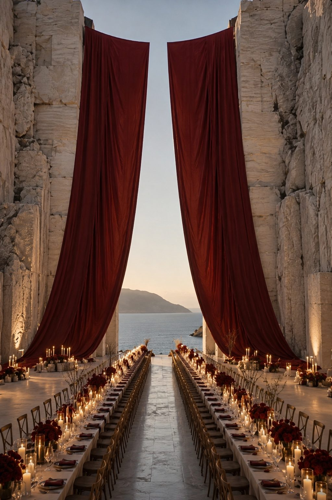
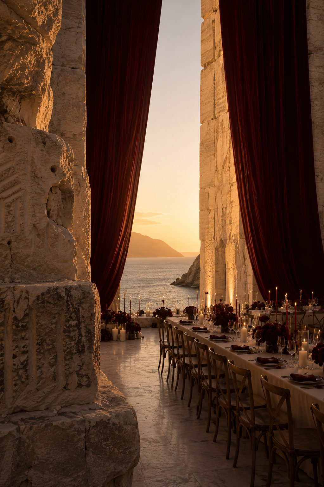
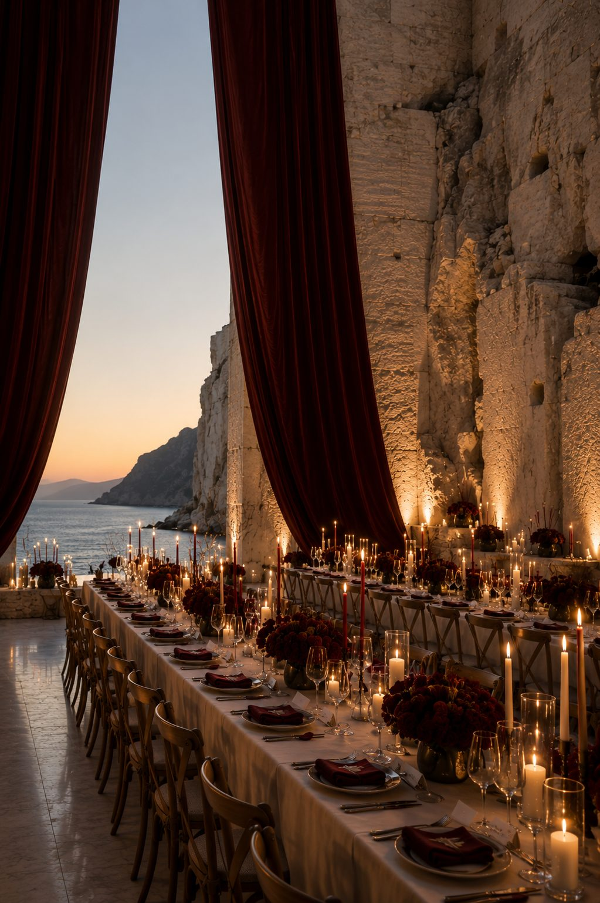
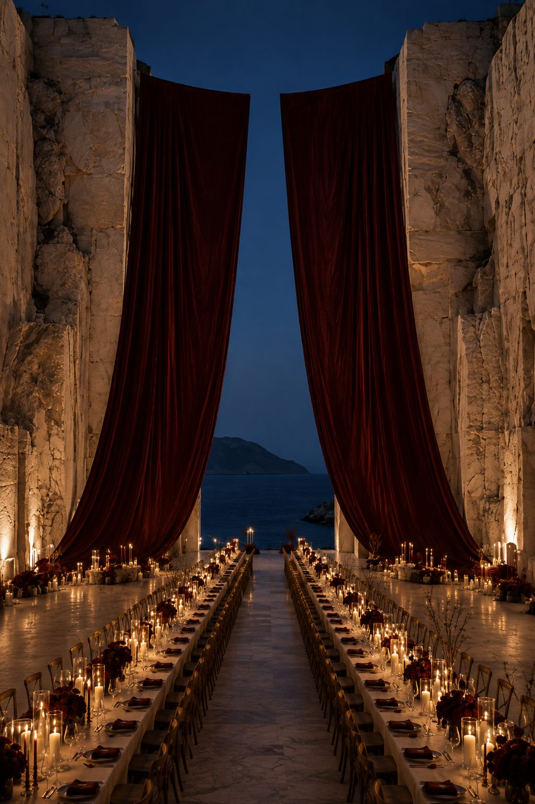
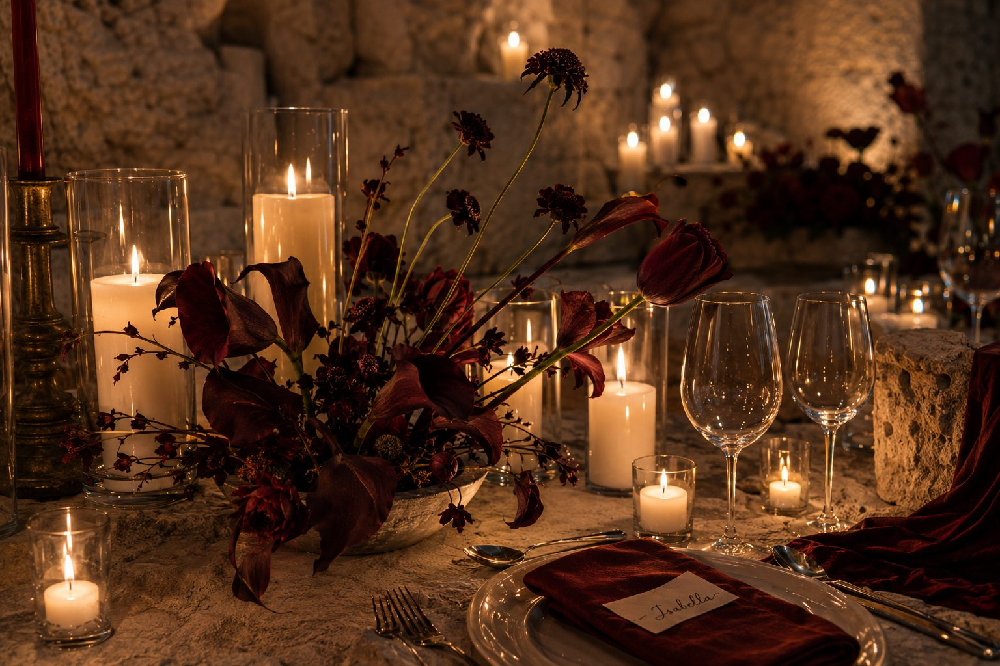

The direction moves like a slow arrival: architecture first, atmosphere second, detail only when it earns its place.





No. 01 / Cave Bianche - Private Dinner
A coastal wedding world staged through stone, burgundy textile, water and late light.
The direction moves like a slow arrival: architecture first, atmosphere second, detail only when it earns its place.




